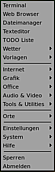
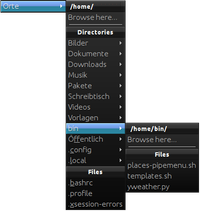

Pipemenü
Dieser Artikel wurde für die folgenden Ubuntu-Versionen getestet:
Ubuntu 14.04 Trusty Tahr
Zum Verständnis dieses Artikels sind folgende Seiten hilfreich:
 Eine Spezialfunktion des Fenstermanagers Openbox ist das sogenannte "pipe menu". Dahinter steckt ein Mechanismus, der ein externes Programm oder Skript aufruft und die Ausgabe/das Ergebnis des Programms/Skripts wieder an Openbox übergibt. Damit lassen sich dynamische (Unter-)Menüs erzeugen, da bei jedem Aufruf des Menüpunkts das Skript erneut abgearbeitet wird.
Diese Funktion wird erst vor dem Hintergrund verständlich, dass Openbox vom Konzept her ursprünglich auf das heute übliche Programm-Menü im Panel verzichtete und stattdessen das Kontextmenü  zur Auswahl und zum Start von Programmen benutzte. Das Kontextmenü lässt sich mit einem Pipemenü um eigenen Funktionen erweitern und dem persönlichen Bedarf anpassen. Wer diese Art der Bedienung in der Praxis erst mal ausprobieren möchte, kann dies z.B. mit CrunchBang tun.
zur Auswahl und zum Start von Programmen benutzte. Das Kontextmenü lässt sich mit einem Pipemenü um eigenen Funktionen erweitern und dem persönlichen Bedarf anpassen. Wer diese Art der Bedienung in der Praxis erst mal ausprobieren möchte, kann dies z.B. mit CrunchBang tun.
Nach ein wenig Grundwissen einige praktische Beispiele, was sich damit realisieren lässt. Weitere Ideen können gerne ergänzt werden.
Voraussetzungen¶
Unter Lubuntu muss man das Kontextmenü von Openbox erst aktivieren. Dazu klickt man den leeren Desktop mit der rechten Maustaste an und wählt den Punkt "Einstellungen -> Fortgeschritten -> Beim Klicken auf den Desktop die Menüs des Fenstermanagers anzeigen" aus (siehe auch LXDE Einstellungen).
Skripte¶
Neue Funktionen werden meist - aber nicht zwangsläufig - als Shell- oder Python-Skripte realisiert. Diese müssen irgendwo gespeichert werden. Zwar ist der Ort prinzipiell egal, aus Gründen der Übersichtlichkeit wird
~/bin/ - im Homeverzeichnis des angemeldeten Benutzers (den Ordner ggfs. anlegen)
oder
/usr/local/bin/ - für eine systemweite Nutzung
empfohlen. Darüber hinaus müssen Shell-Skripte ausführbar [1] sein (bei Python-Skripten bisher nicht notwendig). Entweder benutzt man dazu einen Dateimanager oder den Befehl chmod in einem Terminalfenster [2]:
chmod 755 SKRIPTNAME.sh
Einbindung in Openbox¶
Dazu editiert [3] man die Datei ~/.config/openbox/menu.xml. Ein Editor mit Syntax-Hervorhebung für XML, der die Übersicht erleichtert (z.B. Geany oder Medit), ist empfehlenswert.
Hinweis:
Unter Lubuntu muss zuerst:
die Datei /usr/share/lubuntu/openbox/menu.xml nach ~/.config/openbox/menu.xml kopiert werden und
die Verwendung von ~/.config/openbox/menu.xml in ~/.config/openbox/lubuntu-rc.xml aktiviert werden
Einträge in dieser Datei legen auch die Reihenfolge innerhalb des Kontextmenüs fest – je nachdem, ob etwas am Anfang oder am Ende steht, erscheint es am Anfang oder Ende des Kontextmenüs. Um das Einfügen zu erleichtern, hier ein Ausschnitt aus dieser Datei:
... <item label="Firefox"> <action name="Execute"> <execute>firefox</execute> </action> </item> <separator/> # ein neuer Pipemenü-Eintrag: <menu id="..." label="..." execute="..." /> # <separator/> ...
| Syntax für neue Pipemenü-Einträge | |
| Parameter | Erklärung |
id="..." | beliebig, muss aber eindeutig und nicht leer sein |
label="..." | Bezeichnung des Menü-Eintrags |
execute="..." | Pfad und Name des Skripts |
Konkretere Hinweise finden sich in den einzelnen Beispielen.
Um eine neue Funktion verfügbar zu machen, muss Openbox neu gestartet werden:
openbox --reconfigure
Alternativ kann man sich auch ab- und wieder neu anmelden.
Beispiele¶

Neue Datei aus Vorlage¶
Die Dateimanager Nautilus und Thunar (PCManFM verwendet leider keine Vorlagen) bieten eine Funktion, um im gerade geöffneten Ordner eine neue Datei anzulegen. Diese Möglichkeit erreicht man über das Menü mit "Datei -> Dokument anlegen" oder "Rechtsklick -> Neues Dokument erstellen". Standardmäßig wird hier meist nur der Eintrag "Leere Datei" angeboten, mit dem man ein leeres Textdokument erstellen kann.
Um weitere Vorlagen zur Verfügung zu haben, kann man beliebige (leere) Vorlage-Dateien in den Ordner ~/Vorlagen/ im eigenen Homeverzeichnis abspeichern. Um z.B. eine Vorlage für LibreOffice Writer zu erstellen, speichert man einfach ein leeres Dokument als ~/Vorlagen/OpenOffice Dokument.odt. Eine kleine Auswahl an Vorlagen kann man hier  herunterladen und in den Vorlagenordner entpacken [4].
herunterladen und in den Vorlagenordner entpacken [4].
Das folgende Skript geht noch einen Schritt weiter. Nachdem man eine passende Vorlage ausgewählt hat, startet sofort das dafür zuständige Standardprogramm (dieses muss unter Umständen noch festgelegt werden, am einfachsten mit einem Dateimanager, dem Kontextmenü und "Öffnen mit..."). Außerdem wird das Paket
libgnome2-0
 mit apturl
mit apturl
Paketliste zum Kopieren:
sudo apt-get install libgnome2-0
sudo aptitude install libgnome2-0
benötigt.
Skript¶
Vorlage für das Skript templates.sh:
1 2 3 4 5 6 7 8 9 10 11 12 13 14 15 16 17 18 19 20 | #!/bin/bash #bad medicine to open templates, just like gnome! function generate_template_menu { ls ~/Vorlagen | while read; do echo '<item label="'"${REPLY}"'">' echo -n '<action name="Execute"><execute>' echo -n "gnome-open ~/Vorlagen/${REPLY}" echo '</execute></action>' echo '</item>' done } echo '<openbox_pipe_menu>' generate_template_menu echo '</openbox_pipe_menu>' |
menu.xml¶
Über folgende Eintrag werden die Vorlagen in das Kontextmenü eingebunden:
<menu id="TemplatesPipeMenu" label="Vorlagen" execute="templates.sh"/>
Dateimanager¶

Einen Dateimanager – zumindest für das eigene Homeverzeichnis – integriert das Shell-Skript bl-places-pipemenu  . Nachdem man es z.B. als ~/bin/bl-places-pipemenu oder /usr/local/bin/bl-places-pipemenu gespeichert hat, kann es über drei Variablen an den eigenen Bedarf angepasst werden:
. Nachdem man es z.B. als ~/bin/bl-places-pipemenu oder /usr/local/bin/bl-places-pipemenu gespeichert hat, kann es über drei Variablen an den eigenen Bedarf angepasst werden:
# path to your "recent files" script, if you want to incorporate it: #recent_script=/usr/bin/bl-recent-files-pipemenu # Command to open folders at "Browse here..." - any file manager open_folder_cmd=thunar # Text editor of choice text_editor=geany
Dann kann es über folgenden Eintrag ins Kontextmenü eingebunden werden:
XDG-Menü¶
Experten-Info:
Inzwischen sind zwei Pakete in den offiziellen Paketquellen enthalten, die eine mehr oder weniger identische Funktion besitzen:
openbox-menu (ab Ubuntu 14.04, siehe unten)
Skript¶
Mit dem Python-Skript xdg-menu.py ist das komplette  LXDE-Menü unten links (zusätzlich) über das Kontextmenü erreichbar.
LXDE-Menü unten links (zusätzlich) über das Kontextmenü erreichbar.
1 2 3 4 5 6 7 8 9 10 11 12 13 14 15 16 17 18 19 20 21 22 23 24 25 26 27 28 29 30 31 32 33 34 35 36 37 38 39 40 41 42 43 44 45 46 47 48 49 50 | #!/usr/bin/env python # # Copyright (C) 2008 Red Hat, Inc. # # This program is free software; you can redistribute it and/or modify # it under the terms of the GNU General Public License as published by # the Free Software Foundation; either version 2 of the License, or # (at your option) any later version. # # This program is distributed in the hope that it will be useful, # but WITHOUT ANY WARRANTY; without even the implied warranty of # MERCHANTABILITY or FITNESS FOR A PARTICULAR PURPOSE. See the # GNU General Public License for more details. # # You should have received a copy of the GNU General Public License # along with this program. If not, see <http://www.gnu.org/licenses/>. # # Author(s): Luke Macken <lmacken@redhat.com> # Miroslav Lichvar <mlichvar@redhat.com> import gmenu, re, sys from xml.sax.saxutils import escape def walk_menu(entry): if entry.get_type() == gmenu.TYPE_DIRECTORY: print '<menu id="%s" label="%s">' \ % (escape(entry.menu_id), escape(entry.get_name())) map(walk_menu, entry.get_contents()) print '</menu>' elif entry.get_type() == gmenu.TYPE_ENTRY and not entry.is_excluded: print ' <item label="%s">' % \ escape(entry.get_name().replace('"', '')) command = re.sub(' [^ ]*%[fFuUdDnNickvm]', '', entry.get_exec()) if entry.launch_in_terminal: command = 'xterm -title "%s" -e %s' % \ (entry.get_name(), command) print ' <action name="Execute">' + \ '<command>%s</command></action>' % escape(command) print ' </item>' if len(sys.argv) > 1: menu = sys.argv[1] + '.menu' else: menu = 'applications.menu' print '<?xml version="1.0" encoding="UTF-8"?>' print '<openbox_pipe_menu>' map(walk_menu, gmenu.lookup_tree(menu).root.get_contents()) print '</openbox_pipe_menu>' |
Quelle: Fedora Packages Git Repositories
menu.xml¶
Über folgenden Eintrag wird das Skript ins Kontextmenü eingebunden:
<menu id="pipe-xdg-menu" label="Menü" execute="python ~/bin/xdg-menu.py" />
Openbox-Menu¶
Ab Ubuntu 14.04 besteht eine weitere sehr elegante Möglichkeit, vorhandene Programmstarter via Pipemenü verfügbar zu machen. Zuerst wird openbox-menu installiert:
openbox-menu (universe)
mit apturl
Paketliste zum Kopieren:
sudo apt-get install openbox-menu
sudo aptitude install openbox-menu
Problembehebung¶
Manchmal kann es passieren, dass ein Skript eine bestimmte Komponente oder ein anderes Programm benötigt, ohne die es nicht funktioniert. Falls also beispielsweise das oben genannte xdg-menu.py nicht funktioniert, führt man das Skript in einem Terminal-Fenster [2] aus, um die Ausgabe zu überprüfen:
python ~/bin/xdg-menu.py
Eine Fehlermeldung könnte z.B. so aussehen:
Traceback (most recent call last):
File "bin/xdg-menu.py", line 22, in <module>
import gmenu, re, sys
ImportError: No module named gmenuNun sucht man in der Paketverwaltung, ob ein entsprechendes Paket vorhanden ist und installiert es:
python-gmenu
mit apturl
Paketliste zum Kopieren:
sudo apt-get install python-gmenu
sudo aptitude install python-gmenu
Damit ist das Problem in diesem konkreten Fall behoben.
Links¶
Pipemenu-Dokumentation
im Openbox-WikiOpenbox Pipemenu Scripts
- Sammlung fertiger SkripteOpenbox Pipe menus
- ArchWiki (vier weitere Skripte)bunsen-pipemenus
- mehrere Skripte aus CrunchBangOpenbox root menu, sub-menus, pipe menus
- Debian Linux Openbox GuideOpenbox
 Übersichtsartikel
Übersichtsartikel
- Erstellt mit Inyoka
-
 2004 – 2017 ubuntuusers.de • Einige Rechte vorbehalten
2004 – 2017 ubuntuusers.de • Einige Rechte vorbehalten
Lizenz • Kontakt • Datenschutz • Impressum • Serverstatus -
Serverhousing gespendet von